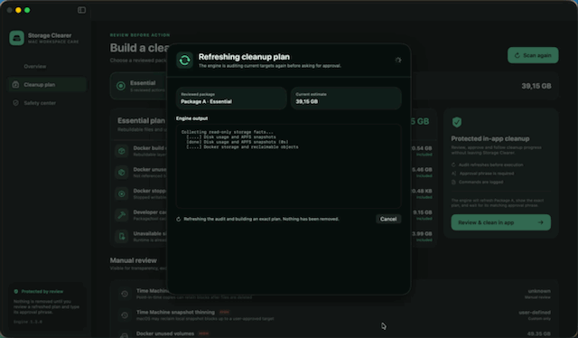

macOS storage care
Make room.
Keep what matters.
Storage Clearer audits Docker, Xcode Simulator, and rebuildable caches, then lets you review and approve cleanup without leaving the app.
- Read-only scan
- Exact approval
- Local processing

Product images
See it before you run it.
A read-only scan becomes a reviewed plan, followed by an exact approval gate.
107-second scan condensed to 12 seconds 8.9×

Download / source
Ready for your Mac.
Apple silicon preview for macOS 13 or later. Download the ZIP, unzip it, and move Storage Clearer to Applications.
Download for macOSDirect ZIP↓View sourceGitHub repository↗
Unsigned preview: on first launch, Control-click the app and choose Open.
SHA-256 checksum
fd975d9a8951edfec5269a036fd8e552ed09d7d2ef3e35318aec456c819e2e27Tip
Found it useful? Tip a coffee.
Support testing and future releases through PayPal or USDT on TON.